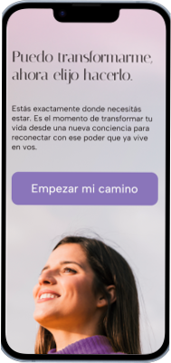

Ahora puedo
Landing page responsive dedicada a promover los servicios de coaching, meditación, desarrollo personal para una persona particular.
- 🎨Rol: Diseño de producto (UX/UI)
- 🛠 Herramientas: Figma, Framer, Adobe Illustrator, Adobe Photoshop.
*Nota: Trabajo realizado junto a Thomas Arismendi


Desafío
Diseñar una landing page que contenga un formulario de contacto y permita darle visibilidad a los cursos de coaching, desarrollo personal y meditación personalizados que realiza Karina Casas. Manteniendo la esencia de "Ahora Puedo".
Proceso de diseño
En esta etapa se investigaron los tipos de usuarios que acceden a este tipo de contenido a través de sus redes sociales junto con la información brindada por Karina. Además se consultó con Karina para comprender su objetivo a transmitir a través del diseño y la forma de escritura.
Se definió la estética a través de la realización de un moodboard para determinar colores, tipografías y estilo de imágenes e ilustraciones. Adicionalmente, se realizó un user persona quien tiene como objetivo Bajar los niveles de estrés y tener más tiempo para el/ella. Sus mayores frustraciones son la rutina muy repetitiva y no encuentra momentos en el día para darse un descanso y cuidado a ella misma.
En esta etapa, se definió la jerarquización de la información dentro de la web, agregando toda la información más relevante para el usuario que permita captar su atención y por ende, contáctarse. El primer paso fue realizar bocetos y wireframes que fueron evaluados constantemente por el cliente. Una vez aprobados se realizó el diseño de los mockups.
Mockups
Resultado
El diseño final propone una experiencia visual acorde con la imagen que el cliente desea transmitir de su empresa. Permite a los usuarios tener la información más relevante disponible y un acceso directo de contacto a través de formulario, redes o número telefónico. El foco está en la jerarquización de información y navegación intuitiva para llegar a la mayor cantidad de usuarios.
Aprendizaje
Este proyecto me permitió comprender la gran importancia de la comunicación activa con un cliente y sobretodo la escucha para entender qué quiere transmitir para encontrar un balance entre sus peticiones y el usuario, para que este último pueda acceder con facilidad y logre entender el motivo de la página web.